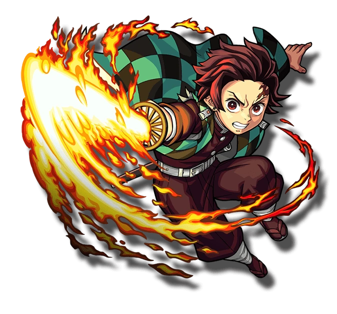
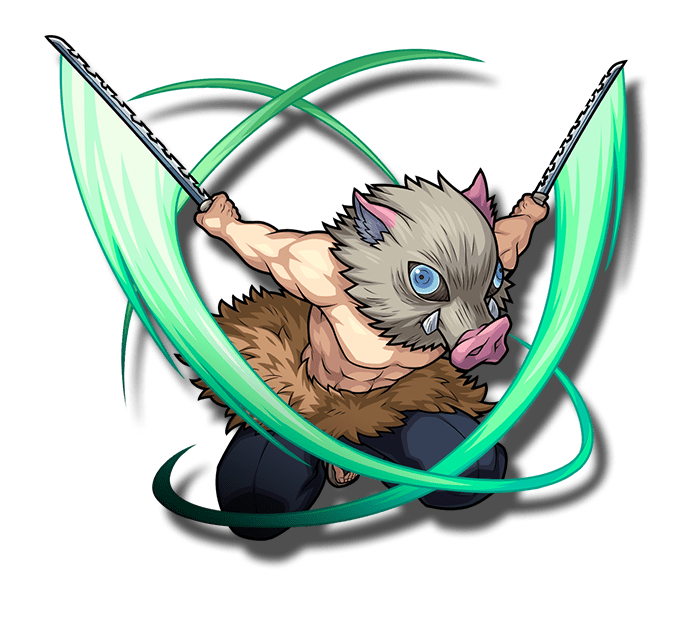

-
Kamado Tanjiro
HP 800
Descrição
É o principal protagonista de Demon Slayer: Kimetsu no Yaiba. Ele é um membro de Kanoe dos Caçadores de Demônios, que se juntou a organização para caçar o responsável pelo assassinato de sua família e a transformação de sua irmã, Nezuko Kamado, em um demônio, enquanto também procurando uma cura para ela.
-
Agatsuma Zenitsu
HP 300

Descrição
É um Caçador de Demônios. Ele é um companheiro de viagem e amigo de Tanjiro Kamado, sendo um dos principais protagonistas do Demon Slayer: Kimetsu no Yaiba. Zenitsu é um jovem de pele clara e olhos de aparência assustada e inclinados para baixo, que desbotam do marrom suave ao dourado.
-
Hashibira Inosuke
HP 1200
Descrição
É um Caçador de Demônios, sendo um dos amigos e companheiro de viagem de Tanjiro Kamado e um dos principais protagonistas de Kimetsu no Yaiba: Demon Slayer.